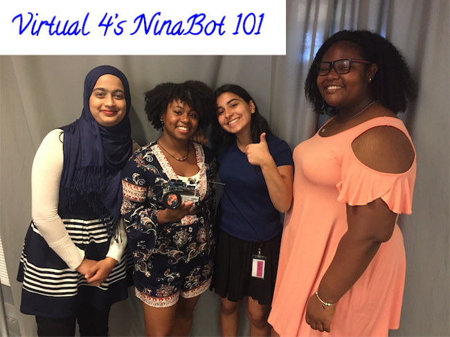

I am a senior in high school from Brooklyn, born and rasied. I love New York City and enjoy spending my days in the city. I am currently in Girls Who Code and learning about computer science.

Utilized RGB values on Atom to edit an image that is similar to the campaign image used by the Obama Administration.
